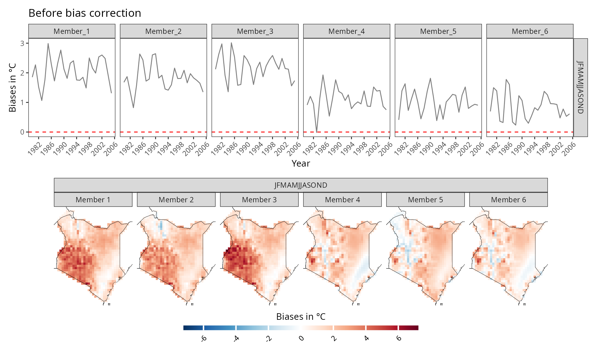
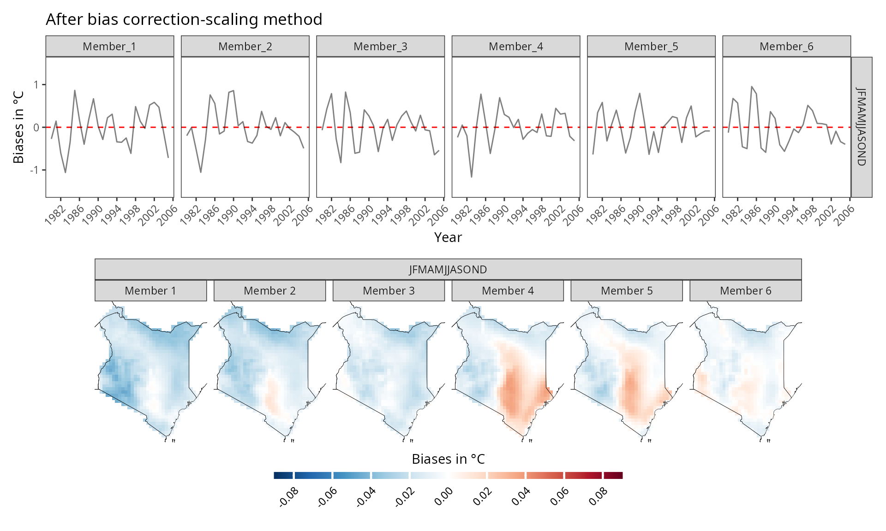
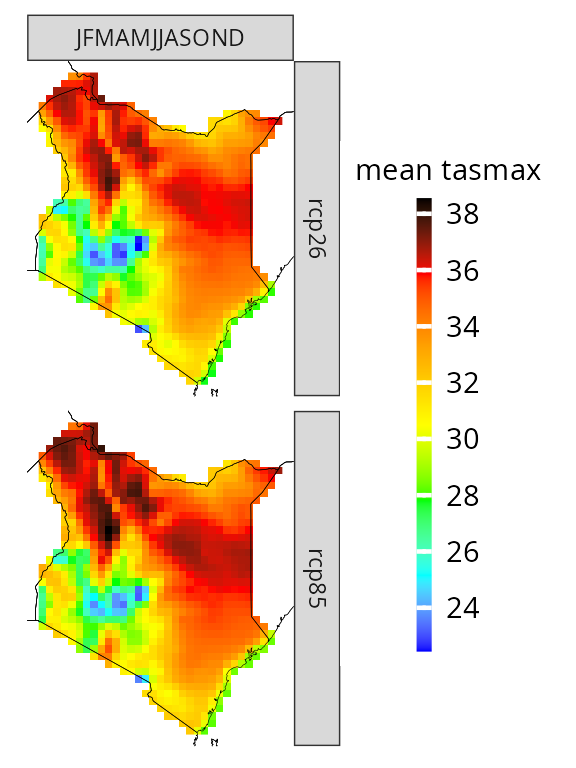
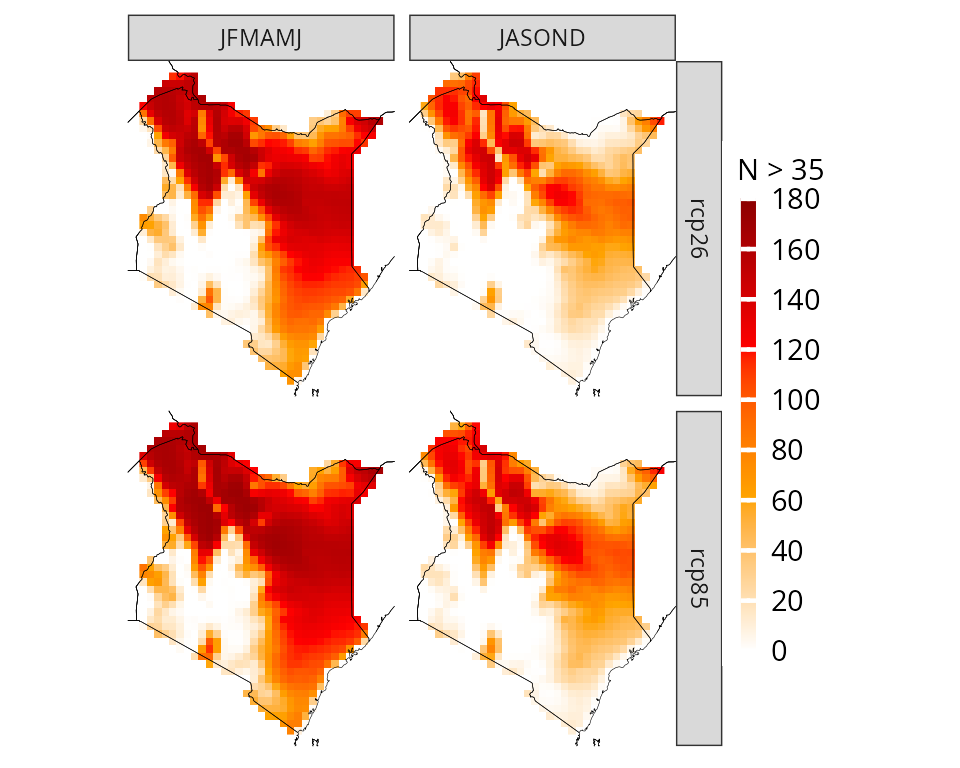
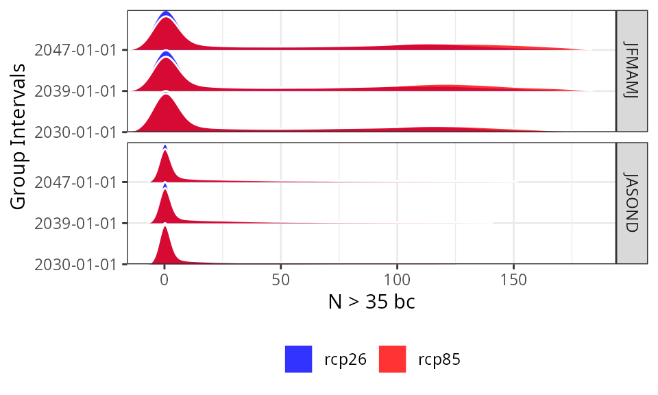
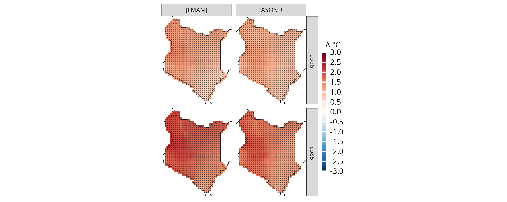
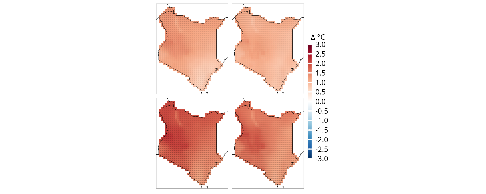
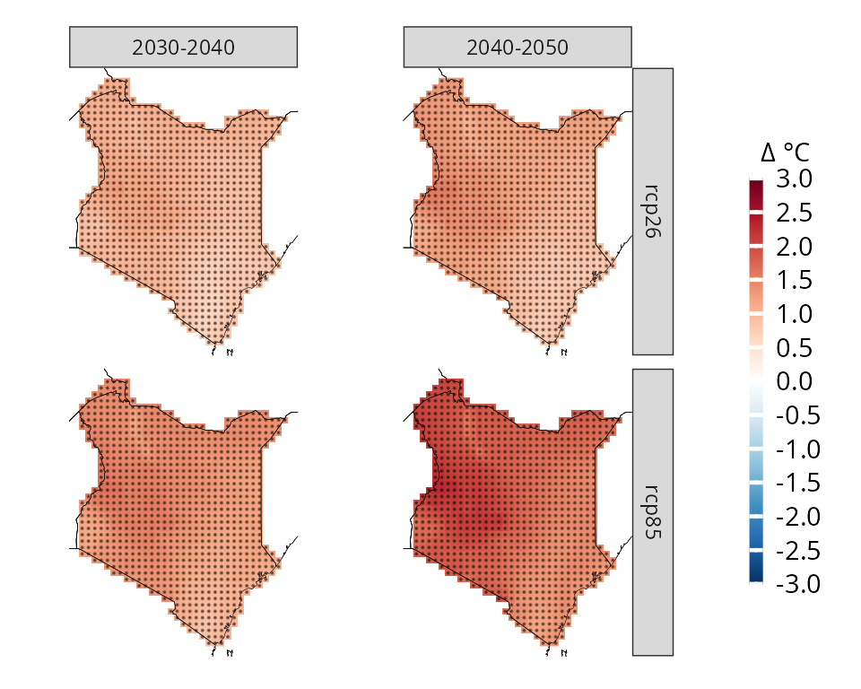

More about CAVAanalytics
Introduction.RmdThe main purpose of CAVAanalytics is making the processing and visualization of multiple climate and impact models simple. CAVAanalytics offers an access point to download CORDEX-CORE climate models, the high resolution (25 Km) dinamically-downscaled climate models used in the IPCC report AR5. CAVAanalytics also offers access to state-of-the-art reanalyses datasets, such as W5E5 and ERA5.
CAVAanalytics is built on top of climate4R and several tidyverse packages. The current available data that can be downloaded using the package are:
Climate module
- CORDEX-CORE simulations (3 GCMs donwscaled with 2 RCMs for two RCPs)
- W5E5 and ERA5 reanalyses datasets
Available variables are:
- Daily maximum temperature (tasmax)
- Daily minimum temperature (tasmin)
- Daily mean temperature (tas)
- Daily precipitation (pr)
- Daily relative humidity (hurs)
- Daily wind speed (sfcWind)
- Daily solar radiation (rsds)
Loading CORDEX-CORE data
Below we are automatically downloading all CORDEX-CORE simulations
alongside the observational dataset ERA5 for Kenya. As you can see, it
is very simple. We will see how to work with locally available models in
another vignette.
Note that this process can take a while, depending on the size
of the country and the number of years specified
# to download a specific area, set country=NULL and specify xlim and ylim arguments.
kenya_exmp <- load_data(path.to.data = "CORDEX-CORE", country = "Kenya", variable = "tasmax",
years.proj = 2030:2055, years.hist = 1980:2005, domain = "AFR-22", path.to.obs = "ERA5")You can explore the output using attributes(kenya_exmp).
# the main output of the loading function is a tibble with list column containing all the downloaded data
class(kenya_exmp[[1]])
#> [1] "tbl_df" "tbl" "data.frame"
colnames(kenya_exmp[[1]])
#> [1] "experiment" "models_mbrs" "obs"
kenya_exmp[[1]]$experiment
#> [1] "historical" "rcp26" "rcp85"
# the column models_mbrs stands for model members. The structure of this element comes from the loadeR package. The data is contained in the data element, and as you can see, it has 6 members. CAVAanalytics automatically binds together multiple models and checks for temporal consistency.
dim(kenya_exmp[[1]]$models_mbrs[[1]]$Data)
#> [1] 6 9278 42 33When uploading CORDEX-CORE data it is important to understand the concept of CORDEX domains. The domain argument in load_data needs to be correctly specified.
Observations
We can examine historical data using the loaded observational dataset, which, in this case, is ERA5. In this case, we are looking at the mean historical maximum temperature for the whole year.
kenya_obs <- observations(kenya_exmp, season=list(1:12))
plotting(kenya_obs, plot_titles = "°C") If you want, you can also use pre-defined IPCC color palettes. You can
type ?IPCC_palette for more info
If you want, you can also use pre-defined IPCC color palettes. You can
type ?IPCC_palette for more info
plotting(kenya_obs, plot_titles = "°C",
palette = IPCC_palette(type = "tmp", divergent = F))
How many days above 35 °C occurred on average?
kenya_obs.35 <- observations(kenya_exmp, season=list(1:12), uppert=35)
plotting(kenya_obs.35, plot_titles = "Days > 35 °C", palette = IPCC_palette(type = "tmp", divergent = F))
You can also specify more than one season at a time
observations(kenya_exmp, season=list(1:6, 7:12), uppert=35) %>%
plotting(., plot_titles = "Days > 35 °C", palette = IPCC_palette(type = "tmp", divergent = F))
You can also visualize the results as a temporal trend
observations(kenya_exmp, season=list(1:6, 7:12), uppert=35) %>%
plotting(., plot_titles = "N.days > 35 °C", temporal=T, palette="black")
And we can apply linear regression to each pixel to assess the statistical significance of the yearly increase in the number of days with Tmax higher than 35 degrees Celsius.
observations(kenya_exmp, season=list(1:12), uppert=35,trends=T) %>%
plotting(., plot_titles = "Days/year", palette=IPCC_palette(type="tmp", divergent = T), legend_range = c(-3,3))
Model biases
Before diving into the analyses of climate model projections, it is essential to examine model biases. CAVAanalytics offers a flexible and straightforward approach to conducting this analysis. Let’s begin by exploring the differences in mean climatology between the CORDEX-CORE historical experiments and ERA5.
# you can specify the season. In this case we are looking at the whole year
biases_kenya <- model_biases(kenya_exmp, season=list(1:12))
a=plotting(biases_kenya, ensemble=F, temporal=T,
plot_titles = "Biases in °C")+ggplot2::ggtitle("Before bias correction")
b=plotting(biases_kenya, ensemble=F,
temporal=F, plot_titles = "Biases in °C", palette = IPCC_palette(type="tmp", divergent = T))
a/b
As we can see, the biases are mainly positive, hence CORDEX-CORE models are warmer than the “observed” data. However, what happens if we bias correct the data? The results look much better now and mean biases are reduced thanks to bias correction. Bias correction is applied with the Empirical Quantile Mapping (eqm) method as default but Quantile Delta Mapping (qdm) or scaling can also be used. Cross-validation is used to avoid overfitting.
bs_scaling=model_biases(kenya_exmp, season=list(1:12), bias.correction = T, method="scaling", cross_validation = "3fold")
a=plotting(bs_scaling, ensemble=F, temporal=T, plot_titles = "Biases in °C", legend_range = c(-1.5,1.5))+ggplot2::ggtitle("After bias correction-scaling method")
b=plotting(bs_scaling, plot_titles = "Biases in °C",legend_range = c(-0.09,0.09), ensemble = F ,palette=IPCC_palette(type="tmp", divergent = T))
a/b
If we want to explore model biases biases on, let’s say, the number of very warm days (days with maximum temperature above 35 °C), then the choice of the bias-correction method is very important. Empirical quantile methods are much more suitable in this case because they correct the data distribution.
bias.scaling=model_biases(kenya_exmp, season=list(1:12), uppert=35, bias.correction = T, method="scaling", cross_validation = "3fold")
a=plotting(bias.scaling, ensemble=F, legend_range = c(-40,40), palette = IPCC_palette(type = "tmp", divergent = T), plot_titles = "Biases in N° days")+ggplot2::ggtitle("After bias correction-scaling method")
bias.eqm=model_biases(kenya_exmp, season=list(1:12), uppert=35, bias.correction = T, method="eqm", cross_validation = "3fold")
b=plotting(bias.eqm, ensemble=F, legend_range = c(-40,40), palette = IPCC_palette(type = "tmp", divergent = T), plot_titles = "Biases in N° days")+ggplot2::ggtitle("After bias correction-eqm method")
a/b
Projections
Now that we looked at model biases, we can start exploring future projections. For example, what if you want to have a look at what will be the projected maximum temperature in Kenya for the 2030-2055 time period? Let’s remember that these models have positive biases though.
# you can specify the season. In this case we are looking at the whole year
proj_kenya <- projections(kenya_exmp, season=list(1:12))
# stat can take either mean or sd. It is used in combination with ensemble=T. Default is always mean
plotting(proj_kenya, ensemble=T, stat="mean", plot_titles = "mean tasmax")
plotting(proj_kenya, ensemble=F, stat="mean", plot_titles = "mean tasmax")
In certain cases, focusing solely on mean temperatures might not provide the insights we need. Instead, we might be interested in understanding the frequency of specific conditions projected to occur. For instance, we may want to determine the number of days with maximum temperatures above 35 °C.
proj_kenya_35 <- projections(kenya_exmp, season=list(1:6, 7:12), uppert=35)
plotting(proj_kenya_35, ensemble=T, legend_range = c(0, 180),
plot_titles = "N > 35", palette=c("white", "orange", "red", "darkred"))
When dealing with model biases, CAVAanalytics offers a straightforward solution by automatically implementing bias correction using the empirical quantile mapping method. This process allows us to correct for discrepancies between observed data and model outputs. Note that CAVAanalytics allows the selection of three bias-correction methods.
# bias correction is applied with the widely used empirical quantile method
proj_kenya_35bc <- projections(kenya_exmp, season=list(1:6, 7:12), bias.correction = T, uppert=35)
plotting(proj_kenya_35bc, ensemble=T,
plot_titles = "N > 35 bc",
palette=c("white", "orange", "red", "darkred"), legend_range = c(0, 180))
The results can also be visualized for the annual time series (data is spatially aggregated).
plotting(proj_kenya_35bc, ensemble=T,
plot_titles = "N > 35 bc", temporal=T, palette=c("blue", "red"))
and without spatial or temporal aggregation. In this case we are looking at the frequency distribution of the yearly data across all pixels
plotting(proj_kenya_35bc, ensemble=T,
plot_titles = "N > 35 bc", spatiotemporal=T, palette=c("blue", "red"))
Climate change signal
While analyzing future periods can be useful, more often we prioritize understanding delta changes, which represent the relative increase or decrease in mean maximum temperatures compared to a baseline. CAVAanalytics facilitates this analysis as well.
ccs_kenya <- climate_change_signal(kenya_exmp, season=list(1:12))
plotting(ccs_kenya, ensemble=F, plot_titles = "Δ °C",
legend_range = c(-3, 3),
palette = c("blue", "cyan", "green", "white", "yellow" ,"orange", "red"))
Climate change signal
While analyzing future periods can be useful, more often we prioritize understanding delta changes, which represent the relative increase or decrease in mean maximum temperatures compared to a baseline. CAVAanalytics facilitates this analysis as well.
To notice that the function climate_change_signal also calculates the agreement in the sign of the change. Basically, with a threshold of 0.8, it means that if 80% of the models agree that the climate change signal is positive or negative, the pixel gets a score of 1. These results are visualized through a black dot.
When working with precipitation, it can be useful to look at the results in percentages. This can be done easily by specifying percentage as TRUE in climate_change_signal
ccs_kenya <- climate_change_signal(kenya_exmp, season=list(1:6,7:12), threshold = 0.8)
plotting(ccs_kenya, plot_titles = "Δ °C",
legend_range = c(-3, 3),
palette = IPCC_palette(type = "tmp", divergent = T))
Anomalies can also be visualized for the annual time series

Customise plot apperances
CAVAanalytics also offer some easy to use function to modify plot appearances. For example, we can remove all facet text from the ggplot object
plotting(ccs_kenya, plot_titles = "Δ °C",
legend_range = c(-3, 3),
palette = IPCC_palette(type = "tmp", divergent = T), point_size=0.08)+
remove_facets(position = "both") # remove facet text
We can also produce more complex plots, for example we can look at two time frames
# subset model projections years
kenya_exmp_2030_2040= years_selection(kenya_exmp, years = 2030:2040, projections = T)
kenya_exmp_2040_2050= years_selection(kenya_exmp, years = 2040:2050, projections = T)
# calculate climate change signal for thw two time frames
ccs_kenya_2030_2040 <- climate_change_signal(kenya_exmp_2030_2040, season=list(1:12), threshold = 0.8)
ccs_kenya_2040_2050 <- climate_change_signal(kenya_exmp_2040_2050, season=list(1:12), threshold = 0.8)
# make first plot, rename facet label
p1= plotting(ccs_kenya_2030_2040, plot_titles = "Δ °C",
legend_range = c(-3, 3),
palette = IPCC_palette(type = "tmp", divergent = T), point_size=0.08)+
rename_facets(current_label = "JFMAMJJASOND", new_label = "2030-2040")+
remove_facets(position = "y")
# make second plot, rename facet label
p2= plotting(ccs_kenya_2040_2050, plot_titles = "Δ °C",
legend_range = c(-3, 3),
palette = IPCC_palette(type = "tmp", divergent = T), point_size=0.08)+
rename_facets(current_label = "JFMAMJJASOND", new_label = "2040-2050")
# combine the plots and collect the legend. You need to have patchwork installed first
p1+p2+plot_layout(guides = "collect")